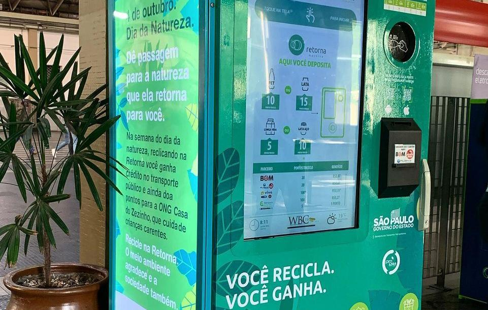

Venha nos conhecer melhor!
Somos pessoas que se preocupam em salvar o planeta sendo assim desenvolvemos o projeto § save é um verbo inglês tradução de salve, que significa salvar, economizar, guardar, poupar, livrar, preservar.
Acredito que os significados do verbo que dizem respeito a palavra save resumem muito bem o que fazemos, e a solução que propomos.
Nos apoiamos em 5 pilares que são os significados literais do verbo save da lingua inglesa.
São Eles: